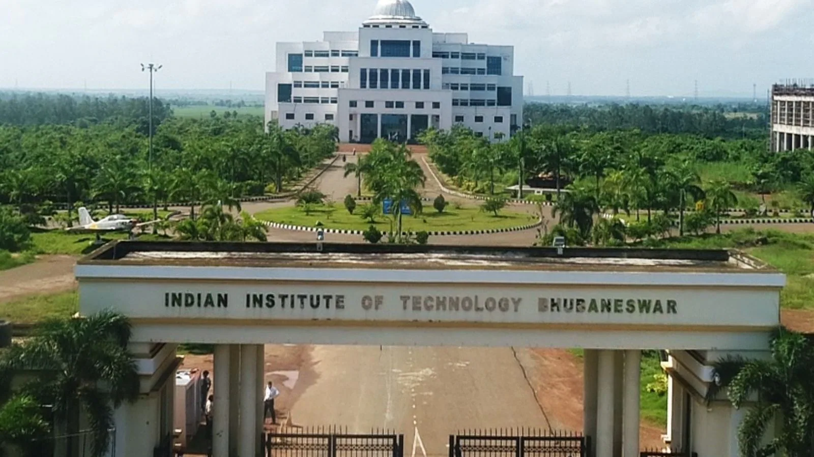
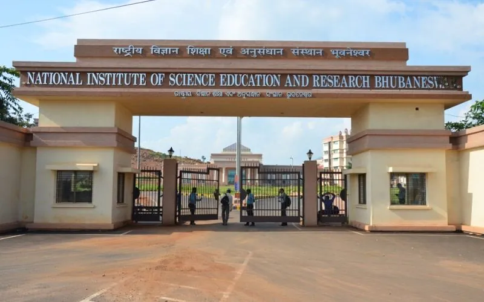

KHORDHA ROAD TOURISM
HISTORY
Khordha is one of the new districts carved out of the former Puri District on 1st April, 1993. The other new district carved out of Puri was Nayagarh. In the year 2000, the district’s name was changed from Khurda to Khordha. The district headquarters is located in Khordha Town, formerly known as Jajarsingh or Kurada, (kurada means foul mouthed).it is also told that the word is derived from two Odia words- “Khura” and “Dhara”, meaning razor and edge, probably because the soldiers of Khurda were as sharp and dreadful as the edge of a razor.
It is home to Premier Public Institutes like NISER and IIT-Bhubaneswar and ICAR- International Centre for Foot and Mouth Disease (ICFMD). Jatni is famous for its celebration of the festival of Ganesh Chaturthi.is very crowded during Ganesh Puja as people from nearby places visit in huge numbers for the occasion. This celebration continues for about a fortnight. People of Jatani maintain communal harmony.
IIT BHUBANESWAR
INDIAN INSTITUTE OF TECHNOLOGY BHUBANESWAR(IIT Bhubaneswar) is a public technical university established by the government of India in 2008, located at Bhubaneswar, Odisha, India.
The institute admits a students for bachelor's, master's programs via JEE Advanced and Graduate Aptitude Test in Engineering respectively.The permanent campus at Argul, Khordha District was inaugurated by the current prime minister of India, Narendra Modi on 24 December 2018.
NISER
The NATIONAL INSTITUTE Of SCIENCE EDUCATION AND RESEARCH (NISER) is an autonomous premier public research institute in Jatani, Bhubaneswar, Odisha, Indiaunder the umbrella of Department of Atomic Energy, Govt. of India

IIT-Bhubaneswar

NISER-Bhubaneswar
Different Blocks
The town is spread across various Railways settlements akin colonies like Traffic Colony, New colony, Accounts Colony, Retang Colony, Loco Colony surrounded by private townships like Gajapati Nagar, Madhusudhan Nagar, Nuagaun, Hata Bazaar, Raja Bazaar, Bali Chhaka Sahi, Mundia Sahi, Railway Market, Kudiary, Sitaram Chhaka, Thaana Chhaka, Bacharapatna, Rathipur, Kusumati (chhaka is the local equivalent for cross, similarly bazaar is the local equivalent for market).
Transports & Connectivity
It has excellent railway connectivity with most major cities in the country. Jatani Railway Station is known as Khurda Road Junction and is the biggest Railway Junction of the East Coast for the Indian Railways in the state. Trains from different parts of the country are routed to different cities from the Chennai-Kolkata main line.